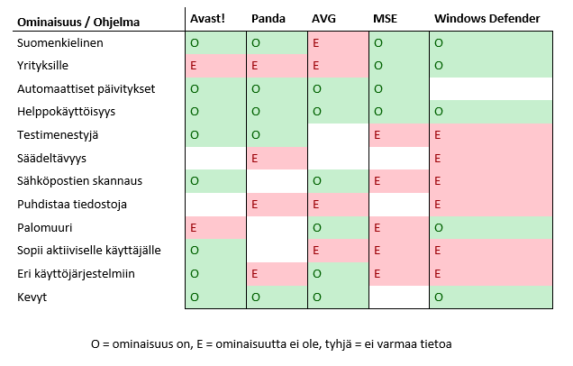

Toivomme, että pystyt käyttämään valmiita tuotteitamme ja palveluitamme sekä omia IT-työkalujasi mahdollisimman turvallisesti. Sen vuoksi on kannattavaa pitää tietokoneiden virusturva ajan tasalla.
Markkinoilla on paljon erilaisia antivirusohjelmistoja, ilmaisia ja maksullisia. Maksulliset versiot tarjoavat yleensä laajempia ominaisuuksia ja sopivat hyvin yrityskäyttöön. Yksityinen käyttäjä pärjää ilmaisillakin ohjelmilla pitkälle, usein kuitenkin parhaat ominaisuudet ovat maksullisen version takana. Alla on listattuna ja taulukoituna muutamia ilmaisia virustorjuntaan tarkoitettuja ohjelmia ominaisuuksineen:
Avast on yksi suosituimmista ilmaisista virusohjelmistoista. Siitä on saatavilla suomenkielinen versio, joka on helppokäyttöinen ja kevyt. Ilmaisversio on mahdollista ladata myös eri käyttöjärjestelmille, mutta yrityksen käyttöön se ei välttämättä sovellu. Avast on mainittu useasti testimenestyjäksi ja se sopii aktiivisille käyttäjille.
Myös Panda on saanut tunnustusta testikäytössä. Se on erittäin kevyt ja helppo käyttää ja käyttöliittymä on saatavilla suomeksi. Panda toimii pilvipalvelun kautta, joka nopeuttaa sen toimintaa huomattavasti. Ohjelma on koneella huomaamaton eikä vaadi usein käyttäjän toimenpiteitä.
AVG:n etuna on sopivuus kaikkiin käyttöjärjestelmiin ja erinomainen sopivuus yksityiselle peruskäyttäjälle. Ilmaisversio sisältää myös sähköpostiskannauksen ja palomuurin. Käyttöliittymä on moderni ja helppokäyttöinen. AVG:n ilmaisversiota ei kuitenkaan ole mahdollista saada suomen kielellä.
Microsoftin omat antivirusohjelmistot ovat varmasti yleisimpiin kuuluvia suojausohjelmia. Windows Defender asentuukin Windows-käyttöjärjestelmän mukana automaattisesti. Ne ovat hyvä pohja virustorjunnalle, mutta eivät yksistään riittäviä.
Ajantasaisen antivirusohjelmiston lisäksi suosittelemme noudattamaan verkossa yleistä varovaisuutta. Kaikkien ohjelmistojen, ja etenkin käyttöjärjestelmän, päivitykset on tärkeää tehdä ajallaan. Salasanojen osalta kannattaa käyttää erilaisia salasananhallintaohjelmia, jotka tulevat myös joidenkin virustorjuntaohjelmien mukana. Niiden avulla on helppo luoda erilaisia, vahvoja salasanoja.